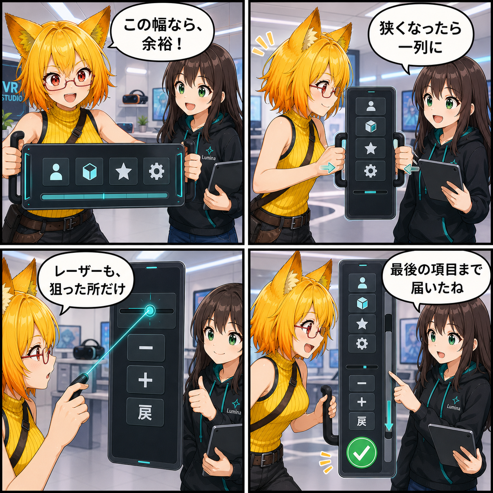

迷わず、はみ出さず。DesktopとVRのUIをGraphiteへ刷新した日
DesktopとVRのUIをGraphiteデザインへ刷新し、狭い表示領域でも列・文字・Scroll・レーザー操作が崩れにくい構成へ更新しました。
main ブランチでは集計期間内に12件のコミットがありました。集計終了時点のHEADは 9937ec5（「Fix responsive VR and desktop UI layouts」）です。Viewer作業ツリーの未コミット差分は実装日を確定できないため、本日の実績に含めていません。集計期間は 2026-08-25 03:00:00 JST から 2026-08-26 02:59:59 JST までです。
操作の入口を、ひとつのデザインへ
DesktopとVRのUIを、暗いGraphite調の共通デザインへ大きく刷新しました。色をそろえるだけではなく、よく使う機能から詳細設定へ進める階層を組み直し、選択・Hover・Activeなどの状態も同じ考え方で読めるようにしています。
VR側では、世界空間に浮かぶパネルのページ構成やタブ、クイックメニューを整理しました。Desktop側でもナビゲーション、設定、ポーズ、素材、撮影などの導線を同じ設計へ寄せています。場所が変わっても「次にどこを触るか」を見失いにくいUIが目標です。
狭くなったら、きちんと並び替える
見た目を整えた後は、表示領域が狭いとボタンや文字が外へはみ出す問題も詰めました。アクションのGridは、親の幅から入る列数を計算し、足りなければ列数を減らします。最後の1列でもセルを親幅へ必ず収めるため、最小幅の指定が逆にはみ出しを生む状態を避けています。
長いDesktopラベルにはAuto Sizeを使い、VRでは可変内容をScroll領域へ移し、最後の項目まで操作できるようにしました。Scrollbarは操作できる幅を保ちながら表示を細くし、本文へ使える幅を広げています。
VRレーザーは、見えている場所だけを狙う
VRのSlider行には、－、＋、戻るといった子ボタンが並びます。行全体をSliderの当たり判定にすると、レーザーが隣のボタンを狙ってもSlider側が先に反応することがありました。
そこでPhysics ColliderとUI Raycastの対象を、実際のTrackとHandleへ限定しました。Scrollbarも細い表示領域に合わせて当たり判定をそろえ、使っていない縦Scrollでは不要なScrollbarを残さない方針です。見た目と操作対象が一致することで、狭いパネルでも意図した場所を選びやすくなります。
技術的なポイント
ResponsiveActionGridが利用可能幅と最小セル幅から列数を決め、1列時も親幅内へ収める- VRページは固定領域と可変Scroll領域を分け、可変領域へ残りの高さを割り当てる
- 長いDesktopテキストはAuto Sizeと省略表示を組み合わせる
- VRのSliderはTrack / HandleだけをRaycastとColliderの対象にし、同じ行の子ボタンとの競合を防ぐ
- Scrollbarの予約幅を小さくし、World Space UIのMaskとレイアウトを統一する
ほかにも進んだこと
同じ集計期間には、AIアニメーション生成の正式機能化、VACモーション編集とキーフレーム操作、指制御とAI Hand Layerの連携、UniVCI Runtimeと両手スケーリング、VR関節操作、テキスト入力中のDesktopショートカット抑制も進みました。
補足
期間内のコミット差分は2,033ファイル、295,211行追加、144,914行削除です。UnityのPrefab更新やUniVCI関連パッケージの追加が大きな割合を占めるため、行数だけを機能規模としては扱っていません。
4コマの裏話
今回は、完成したパネルをろひがだんだん狭くして「健康診断」する構成です。狭くなるほど列が減り、最後にレーザーとScrollまで確かめることで、見た目の刷新だけではなく、幅が変わっても操作できるところまでを一つの流れにしました。
まとめ
DesktopとVRのUIをGraphiteデザインへそろえ、画面幅、文字量、Scroll、レーザー操作まで含めて崩れにくい構成へ更新しました。きれいに見えるだけでなく、狭い場所でも最後の項目へ届き、見えている操作へ正しく反応するUIに近づいています。
本日のひとこと： UIも、狭い場所では上手に整列。